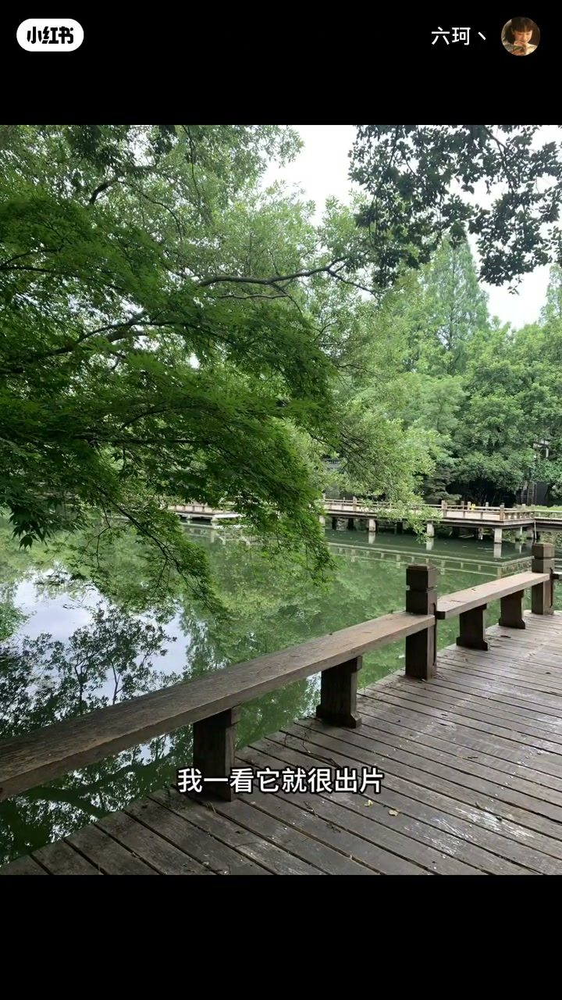
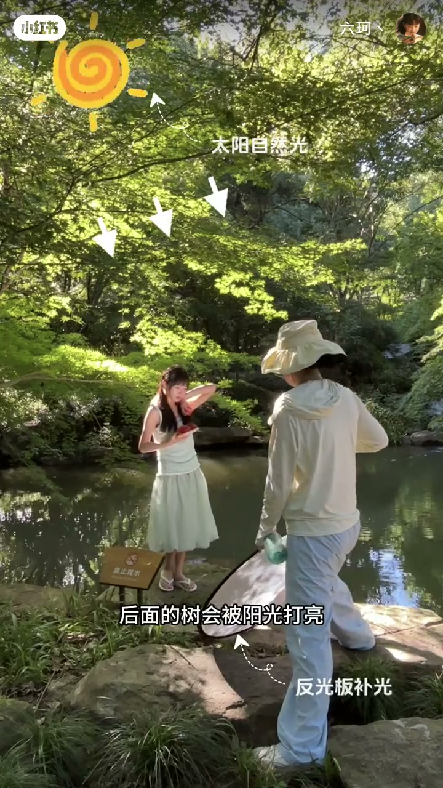
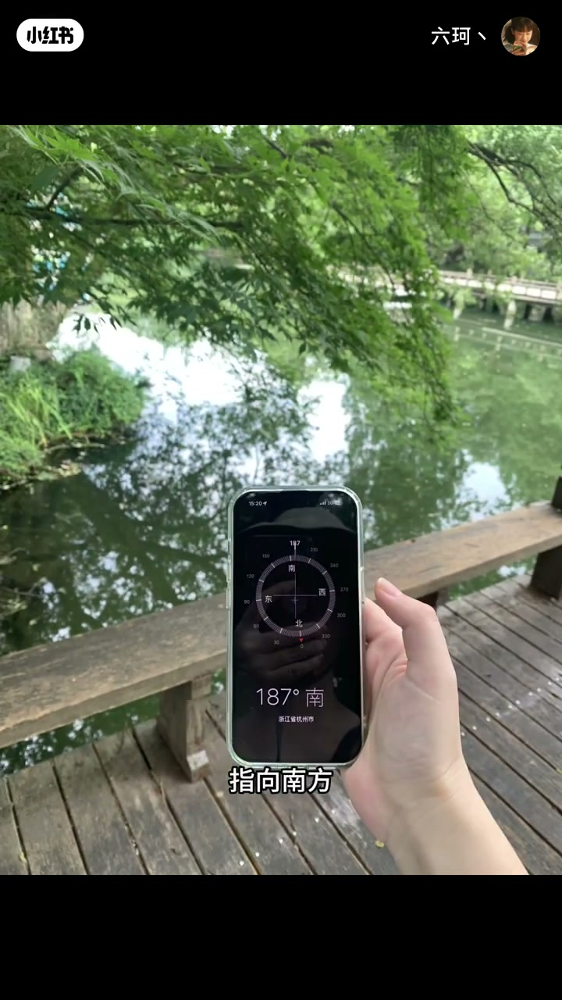
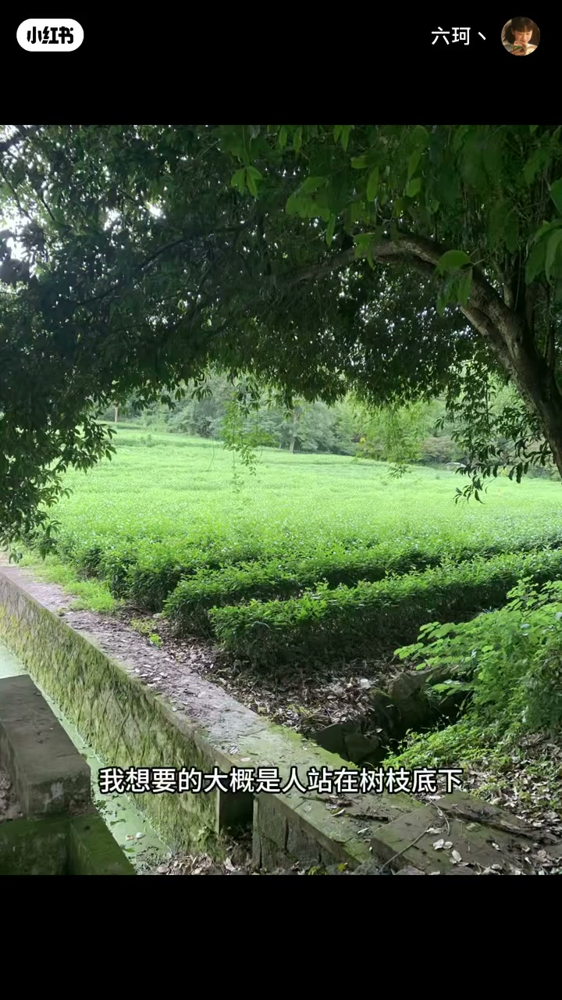
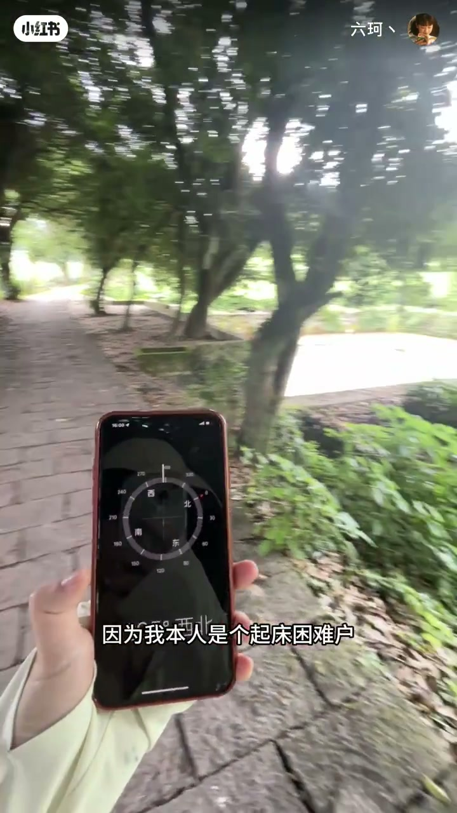

内容要点
六珂回应「为什么要提前踩点」：出片率来自提前找景 + 预判光位。用指南针以南为 12 点估算太阳，优先逆光层次而不是顺光平光；第二个东北向点位因仅清晨可用而被起床困难户主动放弃——踩点的价值是避免白跑。
知识结构
提升出片率=找景+预判光。第一点：栏杆+矮树，预想逆光透树、补面光、喷水增氛围。
树被打亮≈太阳在前方；南=12点估中午斑驳。拒绝顺光：亮度均一无层次，逆光光感更强。
第二点东北向仅7点前有太阳；起不来就放弃，避免白跑，提高下次效率。
踩点不是浪漫散步，是出片率工程：先锁定构图元素，再用指南针把光位换成可执行时段；若时段与作息冲突，放弃点位本身就是有效决策。
00:00-00:33踩点为出片率；第一点栏杆逆光树
上期有人问为什么要提前踩点。作者定义：提前踩点是为了提升出片率；关键是提前找好景，加上提前预判点位的光线。经验丰富的人还能一眼看出哪些角落出片。
示范第一点：人可坐栏杆上，旁有矮树；若拍到阳光透过树的逆光会很绝。预想效果是后树被打亮、给人补面光、喷水增氛围，照片通透。00:18 字幕「我一看它就很出片」。


00:33-00:53指南针判何时逆光；拒绝顺光平光
树何时被打亮？作者判断应是太阳在自己前面。拿出指南针，指向南方对应中午 12 点——大概中午可拍到树影斑驳。
为什么不要太阳从后面来？那就成了顺光：画面亮度一样、光线没层次。作者强调逆光光感最强——这是其教程一贯立场，作为观点保留。

00:53-01:20东北向点位仅清晨；放弃避免白跑
第二点同样一眼出片：人站树枝下让光洒在身上。但指南针指向东北——除很早 7 点前有点太阳，其余时段会被环境挡住。
作者自称起床困难户，因此基本放弃该点，避免白跑。收束：提前踩点加预判光位很有必要，能大大提高下次拍摄效率。


完整转录（47段）
以下文本由 Whisper medium 模型自动转录，可能存在少量识别误差，已尽可能修正。
上期的内容发出来后有同学问为什么要提前踩点
那可以这么说
提前踩点是为了提升出片率
提升出片率的关键是提前找好景
加提前预判点位的光线情况
那如果是拍摄经验丰富的人
还能一眼看出来哪些地方或者角落是出片的
比如说我踩点这个地方的时候
我一看它就很出片
人可以坐在这个栏杆上
旁边就是这种很矮的树
如果我能拍到阳光透过这个树的一个逆光照片
那就会很绝
大致想要的就是这样一个效果
后面的树会被阳光打亮
我再给人补个面光
喷点水增加氛围
照片就会很通透
那什么时候树会被打亮
是不是应该就是太阳在我前面的时候
这个时候我拿出指南针
指向南方对应中午12点
大概那中午的时候
我可以拍到树影斑驳的照片
为什么不是太阳从后面打过来
因为那就成了顺光了
经常看我教程的同学应该知道
逆光的光感是最强的
顺光拍的照片画面亮度是一样的
光线没什么层次
好 再来看一下这个地方
也是一眼出片的位置
我想要的大概是人站在树枝底下
让光洒在人身上的一个画面
类似于这种效果
但是打开指南针
我发现这个地方指向东北方向
就是说除了很早7点前过来拍
早上有点太阳
其他时候这个地方的太阳
会被周围的环境挡住
因为我本人是个起床困难户
所以基本可以放弃这个点位了
这样就可以避免白跑一趟
所以说提前踩点加一盘光位
还是很有必要的
可以大大提高下次拍摄的效率